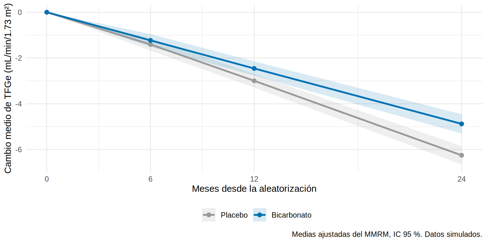

En el ensayo de bicarbonato mediste la TFGe a los 6, 12 y 24 meses. Al cierre, cerca de una quinta parte de los pacientes no tiene la medición de 24 meses. Si analizas solo la última visita, tiras información de las visitas intermedias y de todos los que se perdieron antes. Quieres un análisis que use todo lo medido, dé el efecto en cada visita y se comporte bien con los faltantes. Es el MMRM, el modelo estándar de los ensayos clínicos.
Lo que vamos a hacer
Mirar los datos antes de modelar: medias observadas y correlación entre visitas.
Ajustar un MMRM y entender cada pieza.
Comparar con el análisis por visita, con el de casos completos y con la verdad.
Conocer la alternativa de pendiente aleatoria.
Paso 1: por qué no basta el valor a los 24 meses
Un análisis de mediciones repetidas:
usa todas las mediciones disponibles de cada paciente;
modela la correlación entre mediciones del mismo paciente (las TFGe de una misma persona se parecen entre sí);
admite datos faltantes si la falta depende solo de lo ya observado (MAR, Cap. 13);
estima el efecto del tratamiento en cada visita y a lo largo del tiempo.
Paso 2: pasar los datos a formato largo
Los modelos esperan una fila por medición (Caps. 5.1 y 5.6):
Cada paciente aporta hasta tres filas (una por visita en la que tiene dato). Los que faltan a una visita simplemente tienen menos filas; no se descartan.
Paso 3: mirar antes de modelar
Primero, las medias observadas del cambio de TFGe por brazo y visita (sin modelo), y la correlación entre los cambios de un mismo paciente en distintas visitas:
medias <- largo |>group_by(brazo, mes) |>summarise(media =mean(cambio), ee =sd(cambio) /sqrt(n()), .groups ="drop")ggplot(medias, aes(mes, media, color = brazo)) +geom_line(linewidth =1) +geom_pointrange(aes(ymin = media -1.96* ee, ymax = media +1.96* ee), position =position_dodge(0.6)) +scale_color_manual(values =c(Placebo ="#999999", Bicarbonato ="#0072B2"), name =NULL) +scale_x_continuous(breaks =c(6, 12, 24)) +labs(x ="Meses desde la aleatorización", y ="Cambio medio de TFGe (mL/min/1.73 m²)",caption ="Medias observadas, sin modelo, IC 95 %. Datos simulados.") +theme(legend.position ="bottom")
6 m 12 m 24 m
6 m 1.00 0.11 0.22
12 m 0.11 1.00 0.37
24 m 0.22 0.37 1.00
Dos cosas: las curvas se separan con el tiempo (el efecto es gradual) y los cambios de un mismo paciente están correlacionados entre visitas (de 0.11 a 0.37). Un buen modelo debe tener en cuenta esa correlación; si la ignoras, los errores estándar quedan mal calculados.
Paso 4: el MMRM, pieza por pieza
El MMRM (mixed model for repeated measures) modela el cambio desde la basal con:
efectos fijos de grupo, visita y su interacción (brazo * visita): un efecto distinto en cada visita, sin imponer una forma;
ajuste por la TFGe basal (tfg0);
una matriz de covarianza no estructurada (corSymm + varIdent): que cada visita tenga su propia varianza y cada par de visitas su propia correlación; no se supone ninguna forma.
mmrm <-gls( cambio ~ brazo * visita + tfg0,data = largo,correlation =corSymm(form =~as.integer(visita) | id_f), # correlación libre entre visitas del mismo pacienteweights =varIdent(form =~1| visita) # varianza propia de cada visita)emm <-emmeans(mmrm, ~ brazo | visita) # cambio medio ajustado por brazo y visitacontrastes <-pairs(emm, reverse =TRUE) |>summary(infer =TRUE) # bicarbonato - placebo, en cada visitatab_mmrm <- contrastes |>as_tibble() |>select(visita, diferencia = estimate, ee = SE, ic_inf = lower.CL, ic_sup = upper.CL, p = p.value)tab_mmrm |>mutate(across(where(is.numeric), \(x) round(x, 3)))
La diferencia entre grupos crece con el tiempo: 0.2 (6 meses), 0.5 (12 meses) y 1.4 (24 meses). Es lo esperable si el fármaco enlentece de forma gradual la pérdida de TFGe.
Contra la verdad
El efecto ITT verdadero en cada visita (lo que se esperaría con todos los pacientes y sin faltantes):
El MMRM acompaña a la verdad en las tres visitas, con IC que la contienen. Gráficamente:
emm_df <-as_tibble(summary(emm)) |>mutate(mes =as.numeric(as.character(visita)))basal <-tibble(brazo =factor(c("Placebo", "Bicarbonato"), levels =levels(eca$brazo)), mes =0, emmean =0, lower.CL =0, upper.CL =0)bind_rows(basal, emm_df) |>ggplot(aes(mes, emmean, color = brazo, fill = brazo)) +geom_ribbon(aes(ymin = lower.CL, ymax = upper.CL), alpha =0.15, color =NA) +geom_line(linewidth =1) +geom_point(size =2) +scale_color_manual(values =c(Placebo ="#999999", Bicarbonato ="#0072B2"), name =NULL) +scale_fill_manual(values =c(Placebo ="#999999", Bicarbonato ="#0072B2"), name =NULL) +scale_x_continuous(breaks =c(0, 6, 12, 24)) +labs(x ="Meses desde la aleatorización", y ="Cambio medio de TFGe (mL/min/1.73 m²)",caption ="Medias ajustadas del MMRM, IC 95 %. Datos simulados.") +theme_minimal(base_size =11) +theme(legend.position ="bottom")

Tip💡 Cómo leer un MMRM, y el paquete {mmrm}
Un solo modelo da el efecto a cada visita. La visita primaria (aquí, 24 meses) se preespecifica; las demás son secundarias.
Usa toda la información de cada paciente, aunque le falten visitas.
Con pocas visitas (3-6) y suficientes pacientes, la covarianza no estructurada es la opción más segura; con muchas visitas se prefiere una forma más simple (AR1, Toeplitz).
emmeans convierte el modelo en medias ajustadas y contrastes con IC.
Con el paquete {mmrm} (no se ejecuta aquí) la misma idea se escribe: mmrm(cambio ~ brazo * visita + tfg0 + us(visita | id_f), data = largo), donde us() indica la covarianza no estructurada.
Paso 5: ¿y si analizo cada visita por separado?
La alternativa “casera” es un ANCOVA (11.3) por visita, usando solo a quienes tienen dato en esa visita. Compárala con el MMRM y con el análisis de casos completos (quedándose solo con los pacientes que tienen las tres visitas):
En este ECA los tres análisis son parecidos: los datos faltan según la TFGe ya observada y de modo moderado. El MMRM tiene la ventaja de usar a los pacientes con datos parciales y de dar un único modelo coherente; con más pérdida, o con pérdida que dependa de lo no observado (MNAR), todos los métodos se sesgan y hay que hacer análisis de sensibilidad (Cap. 13).
Paso 6: la alternativa de pendiente aleatoria
Un modelo mixto con intercepto y pendiente aleatorios por paciente da a cada paciente su propia trayectoria; el efecto del tratamiento es el cambio en la pendiente (mL/min/1.73 m² por año).
largo_a <- largo |>mutate(anio = mes /12)m_mixto <-lmer(tfg ~ anio * brazo + tfg0 + (anio | id_f), data = largo_a,control =lmerControl(optimizer ="bobyqa"))coef_pend <-summary(m_mixto)$coefficients["anio:brazoBicarbonato", ]round(coef_pend, 3)
Estimate Std. Error t value
0.799 0.213 3.758
El efecto sobre la pendiente es de ~0.8 mL/min/1.73 m² por año (la verdad ITT es 0.64; el IC de este ensayo es amplio). Un modelo de pendiente supone trayectorias lineales; el MMRM no impone forma y suele preferirse como análisis primario de un ECA con pocas visitas fijas.
MMRM
Pendiente aleatoria
Efecto estimado
Diferencia en cada visita
Diferencia en la pendiente
Supuesto sobre el tiempo
Ninguno (la visita es un factor)
Trayectoria lineal
Datos faltantes
MAR
MAR
Cuándo
Pocos tiempos fijos (ensayos)
Muchas mediciones irregulares (cohortes)
Importante🎯 En resumen
Con mediciones repetidas, usa todas: MMRM (grupo × visita, covarianza no estructurada, ajuste por basal) para visitas fijas, o pendiente aleatoria para trayectorias lineales.
Mira antes de modelar: medias observadas y correlación entre visitas.
emmeans da medias ajustadas y contrastes por visita con IC.
Estos modelos manejan datos faltantes MAR; si la falta depende del desenlace no observado (MNAR), haz análisis de sensibilidad (Cap. 13).
La visita y el modelo primarios se preespecifican.
Ejercicio
Ajusta un MMRM con covarianza compuesta simétrica (corCompSymm) y compara el AIC con el de la no estructurada.
Calcula la diferencia a 12 meses en el análisis de casos completos y compárala con la del MMRM.
Agrega al modelo de pendiente aleatoria la interacción con dm. ¿Cambia la trayectoria en diabéticos?